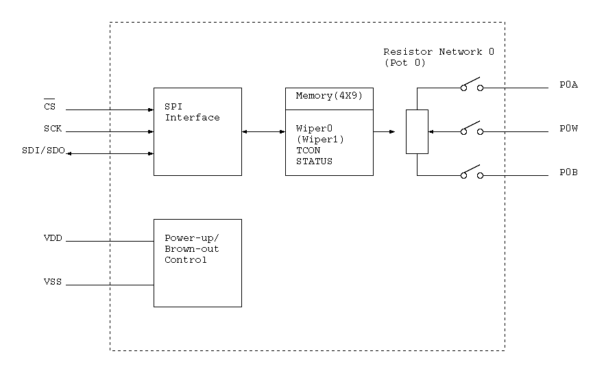
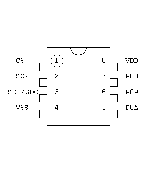
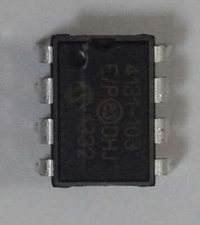
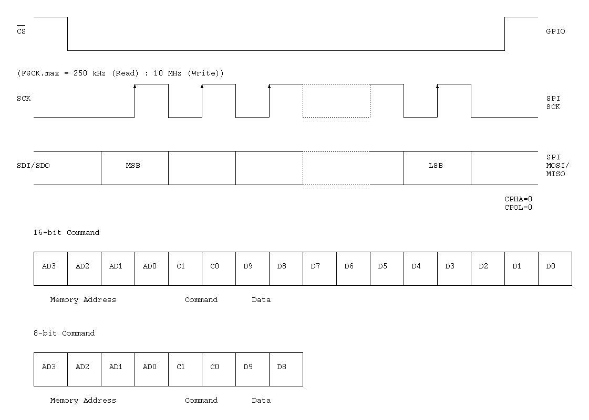

Microchip MCP4131
The MCP4131 is a 7-bit digital potentiometer. It has an SPI interface.

 
SPI interface
| Address | Function |
|---|---|
| 0x00 | Volatile Wiper 0 |
| 0x01 | Volatile Wiper 1 |
| 0x04 | Volatile TCON Register |
| 0x05 | Status Register |
| C1:C0 | Command | Type |
|---|---|---|
| 00 | Write Data | 16-bit |
| 01 | Increment | 8-bit |
| 10 | Decrement | 8-bit |
| 11 | Read Data | 16-bit |